Code
import pyomo.environ as pyo
import pyomo.gdp as gdp
import pandas as pd
import matplotlib.pyplot as pltcbarz
June 21, 2022
“What should be done next?” is a question one faces in many different situations. In this notebook we consider two scheduling problems:
A single machine determines the throughput of an entiry production, for example because only one machine of this type is available, its the slowest machine in a production line, etc. . Such a machine is called a bottleneck machine. We ask for an optimal job schedule for the bottleneck machine.
We have multiple machines and a set of jobs for them and ask for an optimal job schedule for the machines.
Moreover each job has a start date (release), a duration time and a due time.
Our task is to find an optimal sequence of jobs, but we have not said what an optimal schedule is.
In practize there may be different answer to this question depending on the application and the circumstances. Hence we will consider the following key performance indicators (KPIs) to compare different schedules and measure their optimality
This notebook is based on (Guéret, Prins, and Sevaux 1999, chap. 74) and (Postek et al. 2022).
In order to see the benefit of mathematical optimization we proceed as follows:
In our discussion we use the following example of jobs.
jobs = {
'A': {'release':2, 'duration': 5, 'due': 10},
'B': {'release':5, 'duration': 6, 'due': 21},
'C': {'release':4, 'duration': 8, 'due': 15},
'D': {'release':0, 'duration': 4, 'due': 10},
'E': {'release':0, 'duration': 2, 'due': 5},
'F': {'release':8, 'duration': 3, 'due': 15},
'G': {'release':9, 'duration': 2, 'due': 22}
}
pd.DataFrame(jobs).T.rename(columns = {'release': 'release time',
'duration': 'duration in hours',
'due':'due time'})| release time | duration in hours | due time | |
|---|---|---|---|
| A | 2 | 5 | 10 |
| B | 5 | 6 | 21 |
| C | 4 | 8 | 15 |
| D | 0 | 4 | 10 |
| E | 0 | 2 | 5 |
| F | 8 | 3 | 15 |
| G | 9 | 2 | 22 |
Schedules can be visualised using GANTT charts. In the next cells we define some helper functions, for example to plot a Gantt chart.
Afterwards we consider empirical schedules, in particular we consider:
# copy and pasted from jeffrey !
def gantt(JOBS, SCHEDULE={}):
bw = 0.3
plt.figure(figsize=(12, 0.7*(len(JOBS.keys()))))
idx = 0
for j in sorted(JOBS.keys()):
x = JOBS[j]['release']
y = JOBS[j]['due']
plt.fill_between([x,y],[idx-bw,idx-bw],[idx+bw,idx+bw], color='cyan', alpha=0.6)
if j in SCHEDULE.keys():
x = SCHEDULE[j]['start']
y = SCHEDULE[j]['finish']
plt.fill_between([x,y],[idx-bw,idx-bw],[idx+bw,idx+bw], color='red', alpha=0.5)
plt.plot([x,y,y,x,x], [idx-bw,idx-bw,idx+bw,idx+bw,idx-bw],color='k')
plt.text((SCHEDULE[j]['start'] + SCHEDULE[j]['finish'])/2.0,idx,
'Job ' + j, color='white', weight='bold',
horizontalalignment='center', verticalalignment='center')
idx += 1
plt.ylim(-0.5, idx-0.5)
plt.title('Job Schedule')
plt.xlabel('Time')
plt.ylabel('Jobs')
plt.yticks(range(len(JOBS)), JOBS.keys())
plt.grid()
xlim = plt.xlim()
if SCHEDULE:
for j in SCHEDULE.keys():
if 'machine' not in SCHEDULE[j].keys():
SCHEDULE[j]['machine'] = 1
MACHINES = sorted(set([SCHEDULE[j]['machine'] for j in SCHEDULE.keys()]))
plt.figure(figsize=(12, 0.7*len(MACHINES)))
for j in sorted(SCHEDULE.keys()):
idx = MACHINES.index(SCHEDULE[j]['machine'])
x = SCHEDULE[j]['start']
y = SCHEDULE[j]['finish']
plt.fill_between([x,y],[idx-bw,idx-bw],[idx+bw,idx+bw], color='red', alpha=0.5)
plt.plot([x,y,y,x,x], [idx-bw,idx-bw,idx+bw,idx+bw,idx-bw],color='k')
plt.text((SCHEDULE[j]['start'] + SCHEDULE[j]['finish'])/2.0,idx,
'Job ' + j, color='white', weight='bold',
horizontalalignment='center', verticalalignment='center')
plt.xlim(xlim)
plt.ylim(-0.5, len(MACHINES)-0.5)
plt.title('Machine Schedule')
plt.yticks(range(len(MACHINES)), MACHINES)
plt.ylabel('Machines')
plt.grid()# jeffrery's code !
def schedule(JOBS, order):
"""Schedule a dictionary of JOBS on a single machine in a specified order."""
start = 0
finish = 0
SCHEDULE = {}
for job in order:
start = max(JOBS[job]['release'], finish)
finish = start + JOBS[job]['duration']
SCHEDULE[job] = {'start': start, 'finish': finish}
return SCHEDULE# mainly jeffrery's code !
def schedule_from_model(m, machines = 1):
SCHEDULE = {}
for j in m.jobs:
if machines == 1:
tmp = 1
else:
tmp = [mach for mach in machines if pyo.value(m.job_to_machine[j,mach]) == 1][0]
SCHEDULE[j] = {
'start': m.start[j](),
'finish': m.start[j]() + m.duration[j],
'machine': tmp
}
return SCHEDULE# jeffreys code
## KPI for job schedule
def kpi(JOBS, SCHEDULE):
KPI = {}
KPI['Makespan'] = max(SCHEDULE[job]['finish'] for job in SCHEDULE)
KPI['Max Pastdue'] = max(max(0, SCHEDULE[job]['finish'] - JOBS[job]['due']) for job in SCHEDULE)
KPI['Sum of Pastdue'] = sum(max(0, SCHEDULE[job]['finish'] - JOBS[job]['due']) for job in SCHEDULE)
KPI['Number Pastdue'] = sum(SCHEDULE[job]['finish'] > JOBS[job]['due'] for job in SCHEDULE)
KPI['Number on Time'] = sum(SCHEDULE[job]['finish'] <= JOBS[job]['due'] for job in SCHEDULE)
KPI['Fraction on Time'] = KPI['Number on Time']/len(SCHEDULE)
return KPIBy specifying schedules we can evaluate and compare them. The following snippet shows how the user can specify a schedule and judge its performance through the KPIs.
We invite the reader to spend some minutes trying to find a better schedule. Spoiler: The given schedule here is already optimal in a way we will see later.
{'Makespan': 30,
'Max Pastdue': 15,
'Sum of Pastdue': 16,
'Number Pastdue': 2,
'Number on Time': 5,
'Fraction on Time': 0.7142857142857143}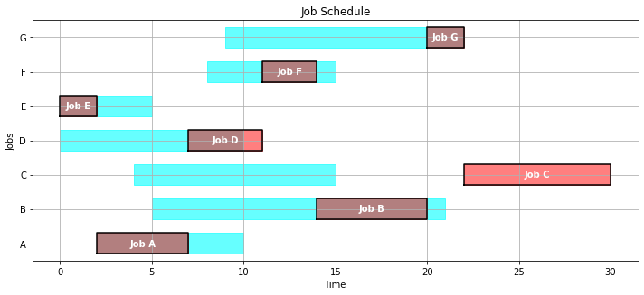
Lets assume the schedule is given by the names of the Jobs. This chould represent a case in which the schedule is predefined through its names by a human or by previous processes.
We evaluate a schedule, in which the ordering is defined by the release time of the job, i.e. what comes first is done first.
{'Makespan': 30,
'Max Pastdue': 13,
'Sum of Pastdue': 31,
'Number Pastdue': 6,
'Number on Time': 1,
'Fraction on Time': 0.14285714285714285}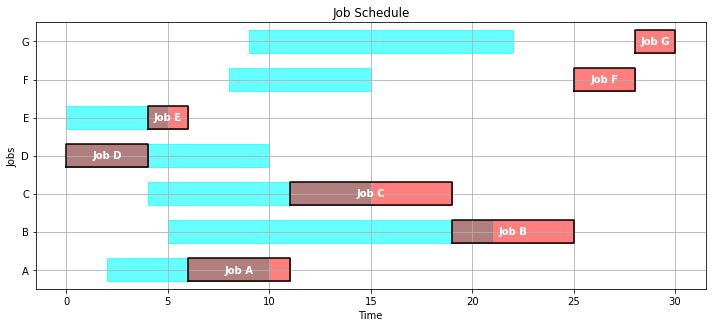
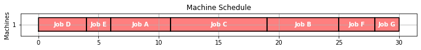
We put the jobs on a stack as follows: At time \(t\) we put all jobs with release time equal to \(t\) on top of the stack. If the machine has a free capacity, we assign the job which is on top of the stack to the machine and remove the job from the stack.
def lifo(JOBS):
unfinished_jobs = set(JOBS.keys())
start = 0
while len(unfinished_jobs) > 0:
start = max(start, min(JOBS[job]['release'] for job in unfinished_jobs))
lifo = {job:JOBS[job]['release'] for job in unfinished_jobs if JOBS[job]['release'] <= start}
job = max(lifo, key=lifo.get)
finish = start + JOBS[job]['duration']
unfinished_jobs.remove(job)
SCHEDULE[job] = {'machine': 1, 'start': start, 'finish': finish}
start = finish
return SCHEDULE
gantt(jobs, lifo(jobs))
kpi(jobs, lifo(jobs)){'Makespan': 30,
'Max Pastdue': 20,
'Sum of Pastdue': 34,
'Number Pastdue': 3,
'Number on Time': 4,
'Fraction on Time': 0.5714285714285714}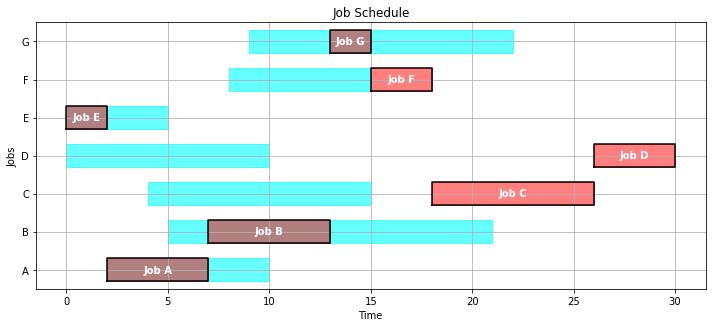
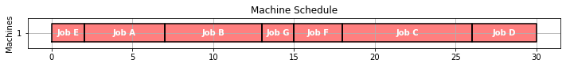
Shortest processing time (SPT) is a scheduling policy that selects for execution the waiting job with the smallest execution time.
def spt(JOBS):
unfinished_jobs = set(JOBS.keys())
start = 0
while len(unfinished_jobs) > 0:
start = max(start, min(JOBS[job]['release'] for job in unfinished_jobs))
spt = {job:JOBS[job]['duration'] for job in unfinished_jobs if JOBS[job]['release'] <= start}
job = min(spt, key=spt.get)
finish = start + JOBS[job]['duration']
unfinished_jobs.remove(job)
SCHEDULE[job] = {'machine': 1, 'start': start, 'finish': finish}
start = finish
return SCHEDULE
gantt(jobs, spt(jobs))
kpi(jobs, spt(jobs)){'Makespan': 30,
'Max Pastdue': 15,
'Sum of Pastdue': 18,
'Number Pastdue': 4,
'Number on Time': 3,
'Fraction on Time': 0.42857142857142855}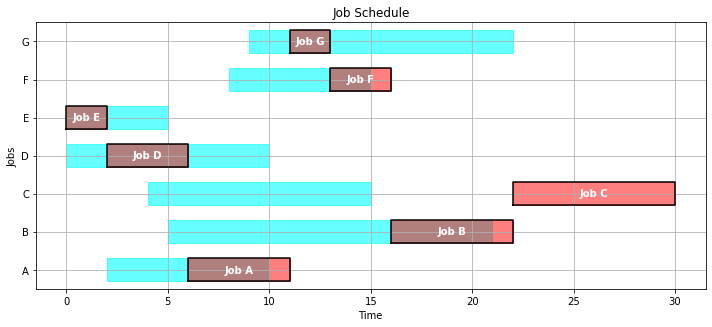
Earliest due date (EDD) is a dynamic priority scheduling algorithm used in real-time operating systems to place processes in a priority queue. Whenever a scheduling event occurs (task finishes, new task released, etc.) the queue will be searched for the process closest to its deadline.
def edd(JOBS):
unfinished_jobs = set(JOBS.keys())
start = 0
while len(unfinished_jobs) > 0:
start = max(start, min(JOBS[job]['release'] for job in unfinished_jobs))
edd = {job:JOBS[job]['due'] for job in unfinished_jobs if JOBS[job]['release'] <= start}
job = min(edd, key=edd.get)
finish = start + JOBS[job]['duration']
unfinished_jobs.remove(job)
SCHEDULE[job] = {'machine': 1, 'start': start, 'finish': finish}
start = finish
return SCHEDULE
gantt(jobs, edd(jobs))
kpi(jobs, edd(jobs)){'Makespan': 30,
'Max Pastdue': 8,
'Sum of Pastdue': 27,
'Number Pastdue': 5,
'Number on Time': 2,
'Fraction on Time': 0.2857142857142857}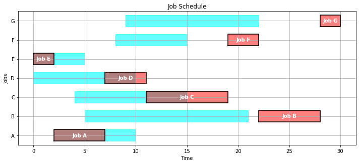
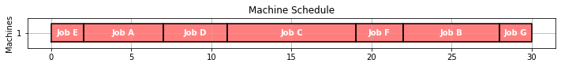
We give a algebraic representation of the model.
\[ start_j\geq release_j \]
\[ \begin{array}{rl} start_j + duration_j + early_j &= due_j + pastdue_j \\ early_j & \geq 0 \\ pastdue_j & \geq 0 \end{array} \]
makespan\[ finish_j \leq makespan \]
finish_j\[ start_j + duration_j = finish_j \]
This can be easily express as a set of disjunctions as follows:
\[ \left[finish_i \leq start_j \right] \vee \left[finish_j \leq start_i \right], \; \forall i<j \]
As we have mentioned in the introduction the application and circumstances define what an optimal schedule is.
The following implementation allows optimizing with respect to the following objectives: - makespan, i.e. the time to complete all jobs - sum_pastdue, i.e. sum of past due
def model_1_machine(jobs, optimize = "makespan"):
m = pyo.ConcreteModel()
# sets
m.jobs = pyo.Set(initialize = jobs.keys())
m.order = pyo.Set(initialize = m.jobs * m.jobs, dimen = 2, filter = lambda m,i,j : i < j)
# parameters
@m.Param(m.jobs, doc = "job due time")
def due(m,i):
return jobs[i]['due']
@m.Param(m.jobs, doc = "job duration time")
def duration(m,i):
return jobs[i]['duration']
@m.Param(m.jobs, doc = "job release time")
def release(m,i):
return jobs[i]['release']
# upper bound on decision variables, in this case we choose the worst case
max_time = sum(m.duration[i] for i in m.jobs) + max(m.release[i] for i in m.jobs)
# decision variables
m.start = pyo.Var(m.jobs, domain = pyo.NonNegativeReals, bounds = (0, max_time))
## additional variables
m.finish = pyo.Var(m.jobs, domain = pyo.NonNegativeReals, bounds = (0, max_time))
m.pastdue = pyo.Var(m.jobs, domain = pyo.NonNegativeReals, bounds = (0, max_time))
m.early = pyo.Var(m.jobs, domain = pyo.NonNegativeReals, bounds = (0,max_time))
# addtional variables for objectives
m.makespan = pyo.Var(domain = pyo.NonNegativeReals, bounds = (0, max_time), doc = "time until all jobs are done")
m.maxpastdue = pyo.Var(domain = pyo.NonNegativeReals, bounds = (0,max_time), doc = "time")
m.ispastdue = pyo.Var(m.jobs, domain = pyo.Binary)
# objective
if optimize == 'makespan':
m.OBJ = pyo.Objective(expr = m.makespan, sense = pyo.minimize)
elif optimize == 'sum_pastdue':
m.OBJ = pyo.Objective(expr = sum([m.pastdue[i] for i in m.jobs]), sense = pyo.minimize)
else:
print('wrong value for parameter optimize. allowed are "makespan" or "sum_pastdue" optimize = makespan used instead.')
m.OBJ = pyo.Objective(expr = m.makespan, sense = pyo.minimize)
# constraints
@m.Constraint(m.jobs)
def job_finish(m,i, doc = "defines job time finish"):
return m.finish[i] == m.start[i] + m.duration[i]
@m.Constraint(m.jobs, doc = "release before start")
def start_after_release(m,i):
return m.start[i] >= m.release[i]
@m.Constraint(m.jobs, doc ="describe position of job w.r.t. time in schedule")
def time_relations(m,i):
return m.start[i] + m.duration[i] + m.early[i] == m.due[i] + m.pastdue[i]
@m.Constraint(m.jobs, doc = "finish time lower than make span")
def finish_lower_makespan(m,i):
return m.finish[i] <= m.makespan
m.schedule = gdp.Disjunction(m.order, rule = lambda m,i,j:
[m.finish[i] <= m.start[j],
m.finish[j] <= m.start[i]])
@m.Constraint(m.jobs, doc = "past due lower than max past due")
def pastdue_lower_maxpastdue(m,i):
return m.pastdue[i] <= m.maxpastdue
@m.Constraint(m.jobs, doc ="")
def pastdue_lower_max_time(m,i):
return m.pastdue[i] <= max_time * m.ispastdue[i]
pyo.TransformationFactory('gdp.hull').apply_to(m)
pyo.SolverFactory('glpk').solve(m)#.write()
return mmakespanBy defintion makespan is the time to complete all jobs.
sum past dueBy definition sum_pastdue is sum of the times the jobs are past due.
Because the previous model can be extended to multiple machines easily we include this case in this notebook.
The algebraic representation of the model is the following:
Because the following model should work for different objective functions some constraints might be unused for a given objective function, but we believe it is easy to identify them.
\[ \begin{array}{llc} start_j \geq release_j & \;\forall j\in jobs & c_1\\ start_j + duration_j + early_j = due_j + pastdue_j & \;\forall j\in jobs &c_2\\ [early_j==0] \vee [pastdue_j == 0] & \;\forall j\in jobs & d_1\\ [pastdue_j == 0] \vee [ispastdue_j == 1] & \;\forall j\in jobs & d_2\\ \sum_m jobs\_to\_machine_{j,m} = 1 & \;\forall j\in jobs, \forall m \in machines & c_3\\ pastdue_j <= maxpastdue & \;\forall j\in jobs & c_4\\ start_j + duration_j <= makespan & \;\forall j\in jobs & c_5\\ [T1] \vee_{i,j,m} [T2] & \;\forall i,j \in order, \forall m \in machines & d_3 \end{array} \]
where \[ \begin{array}{c} T1 := start_i + duration_i \leq start_j + M(1-jobs\_to\_machine_{i,m}) + M(1-jobs\_to\_machine_{j,m})\\ T2 := start_j + duration_j \leq start_i + M(1-jobs\_to\_machine_{i,m}) + M(1-jobs\_to\_machine_{j,m}) \end{array} \]
We consider two machines which should perform the following jobs:
machines = ['1','2']
jobs = {
'A': {'release':2, 'duration': 5, 'due': 10},
'B': {'release':5, 'duration': 6, 'due': 21},
'C': {'release':4, 'duration': 8, 'due': 15},
'D': {'release':0, 'duration': 4, 'due': 10},
'E': {'release':0, 'duration': 2, 'due': 5},
'F': {'release':8, 'duration': 3, 'due': 15},
'G': {'release':9, 'duration': 2, 'due': 22}
}def model_multiple_machines(jobs, machines, optimize = 'makespan'):
#instanciate model
m = pyo.ConcreteModel("multiple jobs, multiple workers")
# index sets
m.jobs = pyo.Set(initialize = jobs.keys())
m.machines = pyo.Set(initialize = machines)
m.order = pyo.Set(initialize = m.jobs * m.jobs, dimen = 2, filter = lambda m,i,j: i<j)
# parameters
@m.Param(m.jobs, doc = "job due time")
def due(m,i):
return jobs[i]['due']
@m.Param(m.jobs, doc = "job duration time")
def duration(m,i):
return jobs[i]['duration']
@m.Param(m.jobs, doc = "job release time")
def release(m,i):
return jobs[i]['release']
# doc = "big M integer in modeling disjunctions" and apply hull transform
BigM = max([m.release[j] for j in m.jobs]) + sum([m.duration[j] for j in m.jobs])
# variables
## decision / timeline variables
m.start = pyo.Var(m.jobs, domain = pyo.NonNegativeReals,
bounds = (0, 1000) ,
doc = "start time of job")
m.pastdue = pyo.Var(m.jobs, domain = pyo.NonNegativeReals,
bounds = (0, 1000),
doc = "time job is past due")
m.early = pyo.Var(m.jobs, domain = pyo.NonNegativeReals,
bounds = (0, 10000),
doc = "time job is finished early")
## objective variables
m.makespan = pyo.Var(domain = pyo.NonNegativeReals, doc = "time to complete all jobs")
m.ispastdue = pyo.Var(m.jobs, domain = pyo.Binary, doc = "binary iff job is overdue")
m.maxpastdue = pyo.Var(domain = pyo.NonNegativeReals, doc = "")
## additional variales
m.job_to_machine = pyo.Var(m.jobs, m.machines, domain = pyo.Binary, doc = "binary assignment job to machine")
# objective
if optimize == 'makespan':
m.OBJ = pyo.Objective(expr = m.makespan, sense = pyo.minimize)
elif optimize == 'sum_pastdue':
m.OBJ = pyo.Objective(expr = sum([m.pastdue[i] for i in m.jobs]), sense = pyo.minimize)
else:
print('wrong value for parameter optimize. allowed are "makespan" or "sum_pastdue" optimize = makespan used instead.')
m.OBJ = pyo.Objective(expr = m.makespan, sense = pyo.minimize)
# constraint / disjunctions
@m.Constraint(m.jobs, doc = "job start after release")
def c1(m,i):
return m.start[i] >= m.release[i]
@m.Constraint(m.jobs, doc = "time variable relation")
def c2(m,i):
return m.start[i] + m.duration[i] + m.early[i] == m.due[i] + m.pastdue[i]
@m.Disjunction(m.jobs, doc = "job either early or pastdue")
def d1(m,i):
return [m.early[i]==0, m.pastdue[i]==0]
@m.Disjunction(m.jobs, doc = "")
def d2(m,j):
return [m.pastdue[j] == 0, m.ispastdue[j] == 1],
@m.Constraint(m.jobs, doc = "each job is assigned to one and only one machine")
def c3(m,j):
return (sum(m.job_to_machine[j,machine] for machine in m.machines) == 1)
@m.Constraint(m.jobs, doc = "define objective variable maxpastdue")
def c4(m,j):
return m.pastdue[j] <= m.maxpastdue
@m.Constraint(m.jobs, doc = "define objective variable makespan")
def c6(m,i):
return m.start[i] + m.duration[i] <= m.makespan
@m.Disjunction(m.machines, m.order, doc = "ordering of jobs")
def d3(m, machine, i,j):
return [m.start[i] + m.duration[i] <= m.start[j] + BigM * ((1 - m.job_to_machine[i,machine]) + (1 - m.job_to_machine[j,machine])),
m.start[j] + m.duration[j] <= m.start[i] + BigM * ((1 - m.job_to_machine[i,machine]) + (1 - m.job_to_machine[j,machine]))
]
transform = pyo.TransformationFactory('gdp.hull')
transform.apply_to(m)
# solve model
pyo.SolverFactory('glpk').solve(m)
return mmakespan - multiple machines{'Makespan': 15.0,
'Max Pastdue': 0,
'Sum of Pastdue': 0,
'Number Pastdue': 0,
'Number on Time': 7,
'Fraction on Time': 1.0}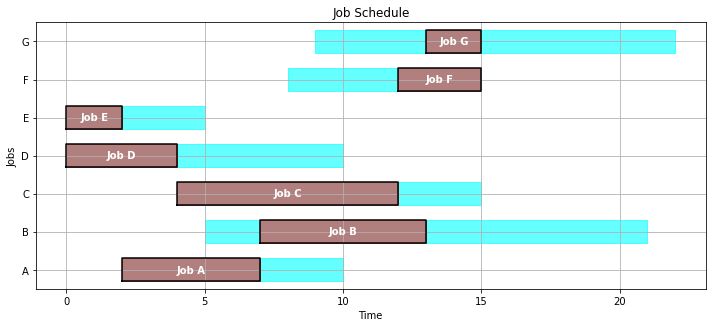
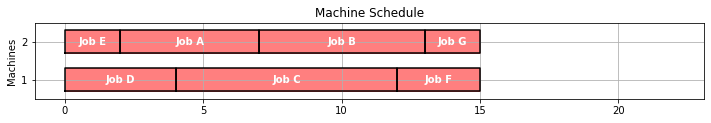
sum past due - multiple machinesBy definition sum_pastdue is sum of the times the jobs are past due.
{'Makespan': 21.0,
'Max Pastdue': 0,
'Sum of Pastdue': 0,
'Number Pastdue': 0,
'Number on Time': 7,
'Fraction on Time': 1.0}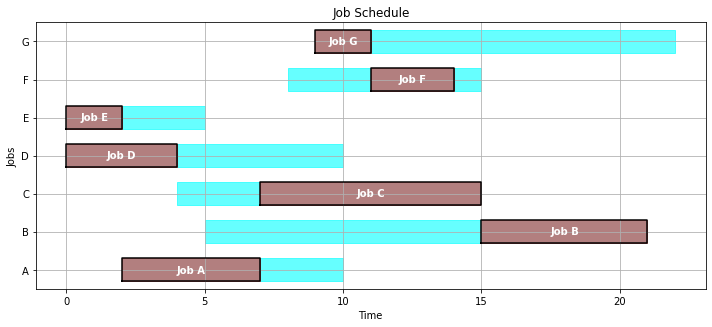
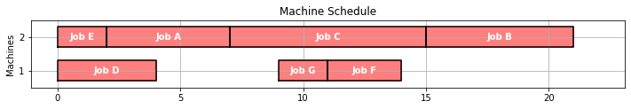
We see that for the choosen empirical schedules maximal 3 jobs are done on time, whereas for the optimal solutions either 4 jobs (optimize makespan) or 5 jobs (optimize sum_pastdue) are done on time.
Having a second machine let us find schedules in which all jobs are done on time.
But we see that the optimal solutions are different - with respect to the sum of pastdue leads to a solution in which one machine has breaks - whereas for makespan both machines are constantly working on jobs.